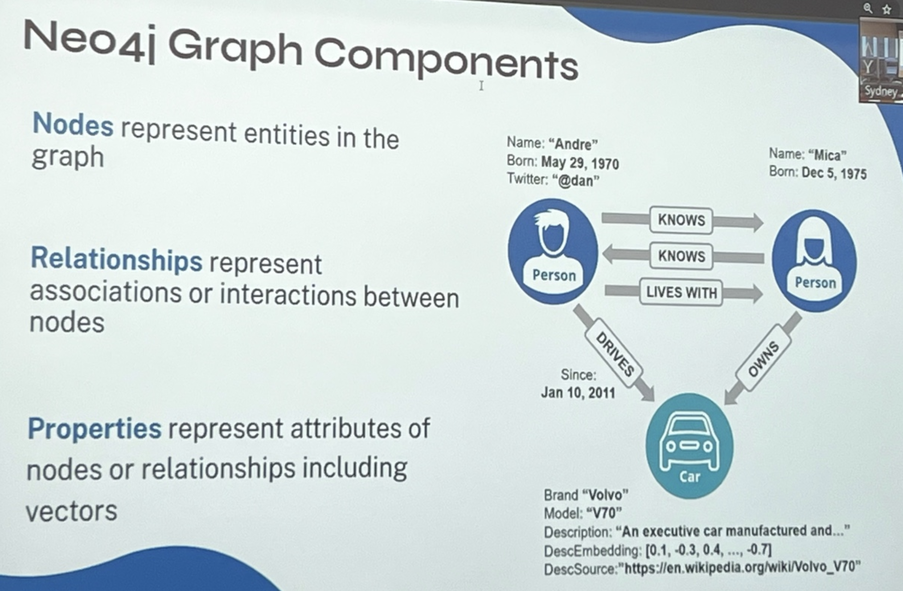
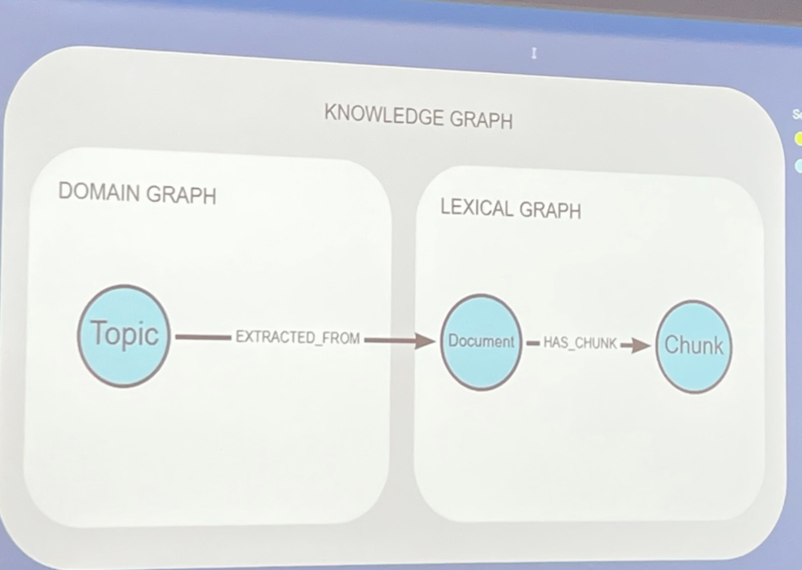
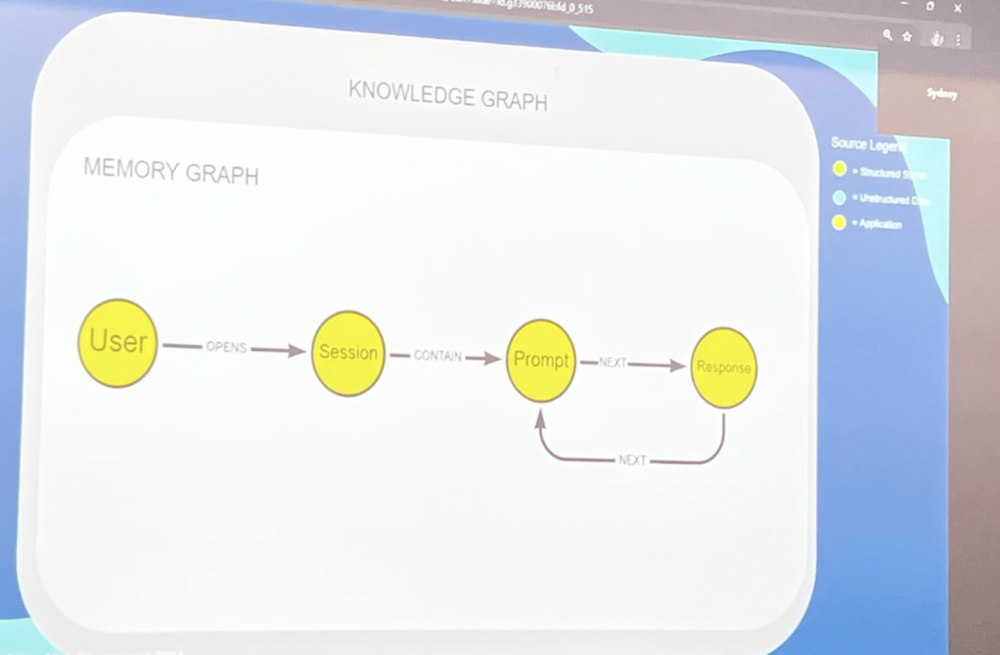
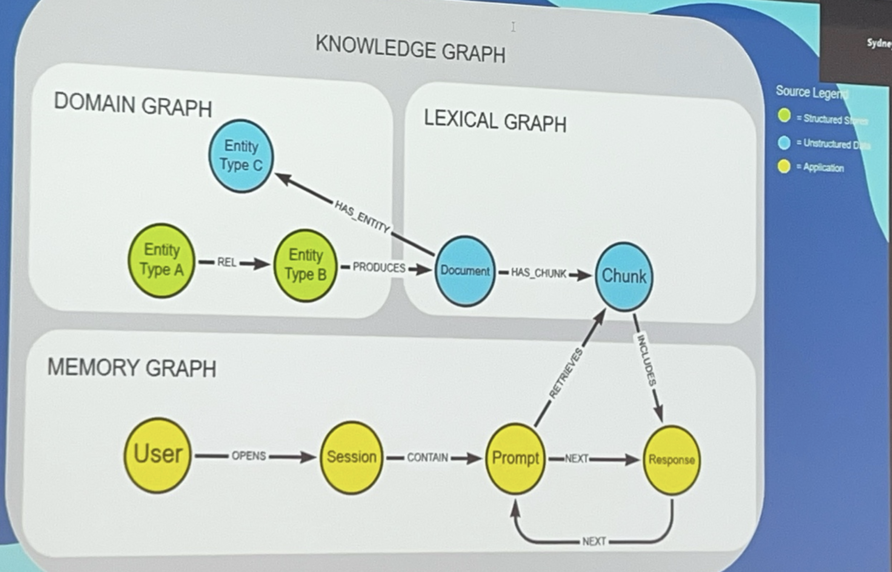
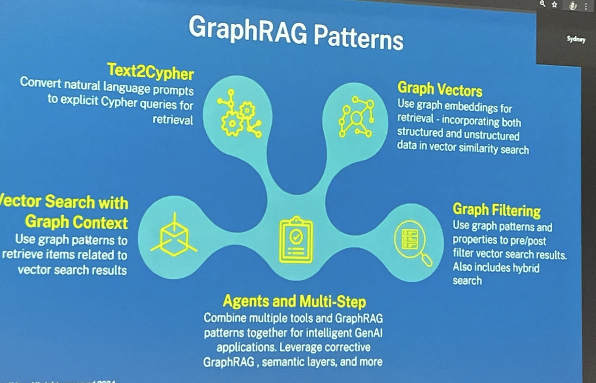

AI/ES/25/ws/2/GraphRAG - Knowledge Graphs for Agents
Smarter AI with GraphRAG – Connecting Structured & Unstructured Data for Better Retrieval
About
Summary
- Date: February 22, 2025
- Time: 12:30 PM
- Abstract
- AI/Generative is only as good as the data it retrieves—but traditional RAG (Retrieval-Augmented Generation) is limited by flat, disconnected search. AI models struggle to connect structured data (databases, APIs) with unstructured data (docs, PDFs, chat logs), leading to incomplete answers and hallucinations.
- Enter GraphRAG—a next-generation retrieval approach powered by Neo4j. This workshop will show you how graphs unlock deeper context, better reasoning, and enterprise-ready AI applications. No graph experience needed!
- You’ll learn how to:
- Integrate structured and unstructured data into a unified retrieval system.
Use GraphRAG to improve accuracy, explainability, and trust in AI-generated answers.
Leverage graph-native retrieval, embeddings, and hybrid search for better responses.
Apply GraphRAG to real-world use cases, from enterprise AI copilots to knowledge-driven automation.
Whether you’re building AI-powered search, chatbots, or intelligent assistants—GraphRAG makes AI retrieval smarter. Join us to learn how Neo4j can take your Generative AI applications to the next level.
- Integrate structured and unstructured data into a unified retrieval system.
Person/Alison Cossette
- Alison Cossette is a dynamic Data Science Strategist, Educator, and Podcast Host. As a Developer Advocate at Neo4j specializing in Graph Data Science, she brings a wealth of expertise to the field. With her strong technical background and exceptional communication skills, Alison bridges the gap between complex data science concepts and practical applications. Alison’s passion for responsible AI shines through in her work. She actively promotes ethical and transparent AI practices and believes in the transformative potential of responsible AI for industries and society. Through her engagements with industry professionals, policymakers, and the public, she advocates for the responsible development and deployment of AI technologies. She is currently a Volunteer Member of the US Department of Commerce - National Institute of Standards and Technology’s Generative AI Public Working Group Alison’s academic journey includes Masters of Science in Data Science studies, specializing in Artificial Intelligence, at Northwestern University and research with Stanford University Human-Computer Interaction Crowd Research Collective. Alison combines academic knowledge with real-world experience. She leverages this expertise to educate and empower individuals and organizations in the field of data science. Overall, Alison Cossette’s multifaceted background, commitment to responsible AI, and expertise in data science make her a respected figure in the field. Through her role as a Developer Advocate at Neo4j and her podcast, she continues to drive innovation, education, and responsible practices in the exciting realm of data science and AI.
- Alison Cossette, Data Science Strategist, Advocate, Educator
workshop form: https://docs.google.com/forms/d/e/1FAIpQLScKDk4bwnHLBKhTZXJ4XP-YBkGLgUh3B1C7-mc38jC7r0BAUQ/viewform
Intro
What to use for External Data Pic 01
PIcs
- My Notes
- problems with #RAG
- we are considering #MCP to feed into a knowledge graph
AI Notes
- The first image is a slide discussing how to use external data in a knowledge graph for RAG (Retrieval-Augmented Generation). It categorizes data into:
- Unstructured (text, images, etc.)
- Vectors (embeddings for retrieval)
- Structured (relational, flat files, etc.)
- Semi-Structured (NoSQL, document-based storage)
Graph db theory - Neo4j Graph Components Pic 02

My Notes
AI Notes
- This slide explains Neo4j Graph Components, breaking them down into:
- Nodes: Represent entities in the graph (e.g., a person or a car).
- Relationships: Represent associations or interactions between nodes (e.g., "KNOWS," "LIVES WITH," "OWNS").
- Properties: Attributes of nodes or relationships, including metadata like names, birthdates, or embeddings.
Example from the slide:
- Person ("Andre") knows Person ("Mica").
- Andre lives with Mica and has a Twitter handle
@dan. - Andre drives a Volvo V70, which has properties like brand, model, and description embedding.
- This structure highlights how Neo4j stores interconnected data efficiently—a key advantage of graph databases over relational models.
how a Knowledge Graph can be structured, separating it into two main components Pic 03

My Notes
- this domain knowledge, this extracted knowledge is actually extracted from that content.
- elicitation with AI Notes about bridging unstructured text with structured knowledge
- domain knowledge (represented as the Domain Graph) is derived from the actual content within documents. This means that:
- Documents are then broken into chunks in the Lexical Graph, linking specific sections to the broader extracted knowledge.
- This structure allows context-aware retrieval—where queries can navigate from high-level concepts (topics) down to specific document sections (chunks) to provide precise, contextually relevant responses.
AI Notes
knowledge graph -> memory graph Pic 04

AI Notes
knowledge graph with domain, lexical and memory graph Pic 05

My Notes
#Example
- which companies are susceptible to a lithium shortage
- getting the answer you need will cross the traversal from the lexical into the domain
- this is how humans answer questions
- what we haven't had an ability to do so far, and what we are challenged by is how do we provide that meta moment where we get the EXACT retrievals that we need
#Example
- data science in rag apps
- what are the subjects that people are communicating on
- what are the areas of knowledge that they are interacting on
- they came in asking about this and they left asking about that
- having this understanding ... as a builder itmmight not be important to you, but to product owner, highly relevant
AI Notes
- This slide presents a comprehensive Knowledge Graph structure, integrating Domain Graph, Lexical Graph, and Memory Graph.
1. Domain Graph (Structured Knowledge)
2. Lexical Graph (Unstructured Knowledge)
3. Memory Graph (Application-Level Interactions)
Key Takeaways
- This model bridges structured and unstructured data, making it ideal for LLM-powered Retrieval-Augmented Generation (RAG).
- Memory Graph ensures context retention by linking user prompts to relevant knowledge chunks.
- Lexical and Domain Graphs provide structured and unstructured content retrieval for AI applications.
- This setup is well-suited for AI-driven search, chatbots, or recommendation systems.
GraphRAG
#AI/RAG/Graph Patterns Pic 06

My Notes
- it's going to run Cosine/Similarity in the graph
text2cypher
the embdding lives on the node in that chunk
#Q how good is text to cypher if text to SQL is not that great
#Q how can you use external vector stores if you want to?
- #MCP
- data doesn't need to move, but you can have a "temporal holding"
- you can create a "relevant graph for the moment"
- what does that look like?
#Q what is a AI/RAG/Graph/Graph Vector
#Q how does indexing work for this?
#Q question about filtering
AI Notes
- This slide outlines GraphRAG Patterns, which integrate graph databases with retrieval-augmented generation (RAG) for AI applications.
Key GraphRAG Patterns:
Neo4j/Text2Cypher
AI/RAG/Graph/Graph Vectors
- Vector Search with Graph Context
- Graph Filtering
- Agents and Multi-Step
Why This Matters?
- Brings structure to retrieval: Enhances AI-driven search by combining vector-based retrieval with graph context.
- More precise and explainable AI responses: Graphs add reasoning to why an answer is retrieved.
- Scalable for enterprise AI: Helps in chatbots, knowledge management, and recommendation systems.
- Pic 07
Semantic Search + Traversal Pic 08, Pic 09
- pic
AI Notes
- This slide illustrates Semantic Search + Traversal using a graph-based recommendation approach.
Key Components:
- Semantically Similar Products
- Customers
- Purchases in Common
- Target Customer
Why This Matters?
Potential Use Cases:
- My Notes
Demo
- llm-graph-builder.neo4jlabs. ...
drag and drop in some product descriptions
graph enhancements schema builder Pic 10, Pic 11
images
My Notes
AI Notes
- This slide illustrates Semantic Search + Traversal using a graph-based recommendation approach.
Key Components:
Why This Matters?
Potential Use Cases:
"The job of Ontologies is never done"
- The "Going Meta" podcast, hosted by Preson/Jesus Barrasa, Neo4j's Global Director of Sales Engineering, features an episode titled "One Ontology to Rule Them All: Building Knowledge Graphs from Mixed Data." This is Season 2, Episode 5, released on December 27, 2024
- In this episode, Barrasa delves into the integration of structured and unstructured data using ontologies to construct comprehensive knowledge graphs. The session includes demonstrations on creating and applying ontologies, importing structured data, and managing unstructured data with GraphRAG.
- Watch the Episode:
- Access Resources and Code: Going Meta GitHub Repository
- Watch the Episode:
there's a way this can help us answer - is there something we know that we don't know? My Notes
Flatfiles Demo - Pic 12, Pic 13
EDA with Graphs and GDS - AI/Grounding Pic 14
- image
My Notes
AI Notes
- This slide outlines the Elements of High-Quality Grounding Data, which are crucial for improving LLM (Large Language Model) performance in retrieval-augmented generation (RAG).
Key Elements:
- Relevant
- Augmenting
- Reliable
- Clean
- Efficient
Why This Matters?
- Ensuring high-quality grounding data improves LLM accuracy and relevance.
- Prevents hallucinations by augmenting model knowledge with trustworthy sources.
- Optimizes token efficiency, reducing unnecessary redundancy.
Graphs enable explainable AI in LLMs
- by having "logging and memory graph" we can dive into it
- this evaluation piece is about the connection between the memory program and the rest
- "most frequently used" grounding text
- centrality algorithm -> chatbot for data science documentation
- how do I get data into neo4j and how do I run the algo
- sometimes you want "most frequent document" communities
- but what's the visualization of the logging
Logging and visualizing document usage Pic 15
- image
AI Notes
- This slide explains how Neo4j can be used to log and visualize LLM conversations, integrating them with context documents in a structured graph.
Key Concepts:
- Graph-Based Conversation Logging
- Graph Structure Example
- Why This Matters?
My Notes
- inspect communities of llm responses to detect if people are getting responses
- there's something important here, but I didn't quite catch it
- it has to do with AI/Evals
- TODO 13:54 come back and check this technique out
- Key Insight it's not going to be obvious
- Her Recommendation - watch the AI/ES/25 talk from the woman from ARIZE -
- inspect communities of llm responses to detect if people are getting responses
LLM response communities using graph data science (GDS) techniques in Neo4j Pic 16
- images
AI Notes
- This slide presents an analysis of LLM response communities using graph data science (GDS) techniques in Neo4j.
Key Insights:
- The table lists communities of LLM responses, each with computed statistics:
- Community ID: Unique identifier for each response cluster.
- Size: Number of responses in the community.
- med_numDocs: Median number of documents referenced.
- med_pageRank: Importance of responses based on PageRank.
- med_textLen: Median length of text responses.
- med_wordCount: Average number of words in responses.
- ratings_Good / ratings_Bad: Number of responses rated positively or negatively.
- NotRated: Responses without ratings.
- The table lists communities of LLM responses, each with computed statistics:
Why This Matters?
- Use Cases
- Topic: Cypher queries to analyze LLM response communities in Neo4j
Inspecting LLM Response Communities
Neo4j Gen-AI Hands-on Workshop Pic 16
Pic 16
AI Notes
Neo4j Gen-AI Hands-on Workshop** Pic 17
Pic17
My Notes
AI Notes
- Course Focus:
- Current Progress:
How This Connects to Your Work
- The Neo4j GraphAcademy Gen-AI Hands-on Workshop focuses on Retrieval-Augmented Generation (RAG) using Neo4j, Python, and LangChain.
Workshop Overview:
Course Objectives: